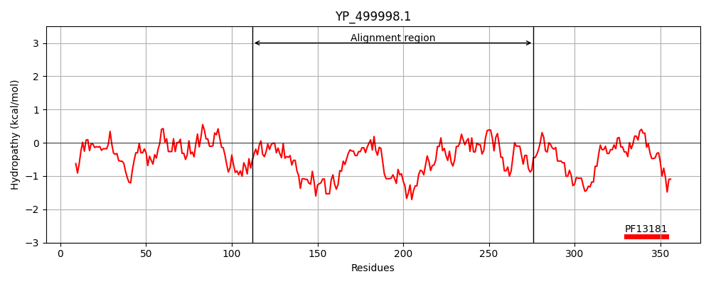
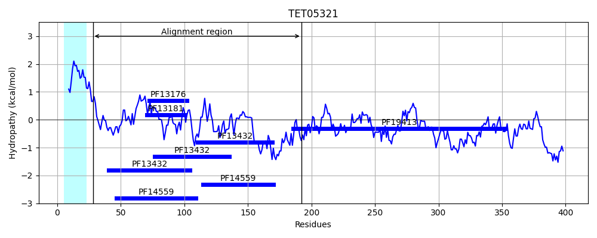
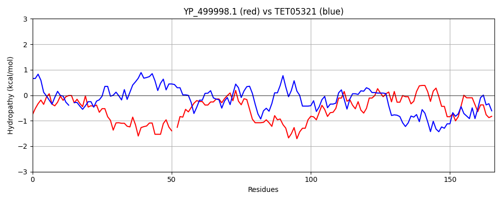

Hit Accession: TET05321
Hit TCID: 1.B.95.5.1
Hit Description: gnl|BL_ORD_ID|20262 gnl|TC-DB|TET05321.1|1.B.95.5.1 YaiO family outer membrane beta-barrel protein [Candidatus Atribacteria bacterium]
Mach Len: 166
e:0.000000
Query TMS Count : 0
Hit TMS Count: 1
TMS-Overlap Score: 0.000000
Predicted Substrates:None
BLAST Alignment:
Score: 123 , Bit scores: 51 bits, E-value: 2.0e-07, Alignment length: 166, Percentage identity: 28
Query: 112 TGEYQVNGVNLFSRMADCSLQSGNYSDAIRLYDEINEDEMTSEDYLKKAIS-YDKNDITQEAIKIMTTLLSKDPDYIQGYLYLQSLYENEKNYPDAIETGKEGLRLSQFYKELMYTTGCLEIEHGDANEGVLLLKQALEVDNAYQEPLLILSDLYRNEEDYEAIIE 276
+G Y + LF+R AD L+SG +A LY +I E+ D + S Y + ++A +++T ++ P+Y Y L ++Y ++ PDAI K+ L + E M L + GD + +LK + D ++ P I DLY D I E
Sbjct: 28 SGVYAQSVSELFTR-ADQLLKSGELQEAAGLYLQILEEIPEEVDAMVILGSIYSQMGEFEKAEEMLTRVIILTPEYKDAYQILSNVYISQDRIPDAIAVLKQLLERDSQHSEAMVKIVILYHQLGDYSNARSMLKILRDSDRSHSLPPNIERDLYAWRCDLNYIYE 192 | Protein Hydropathy Plots: |
|---|
|  |  |
Pairwise Alignment-Hydropathy Plot:
|
|---|
|  |